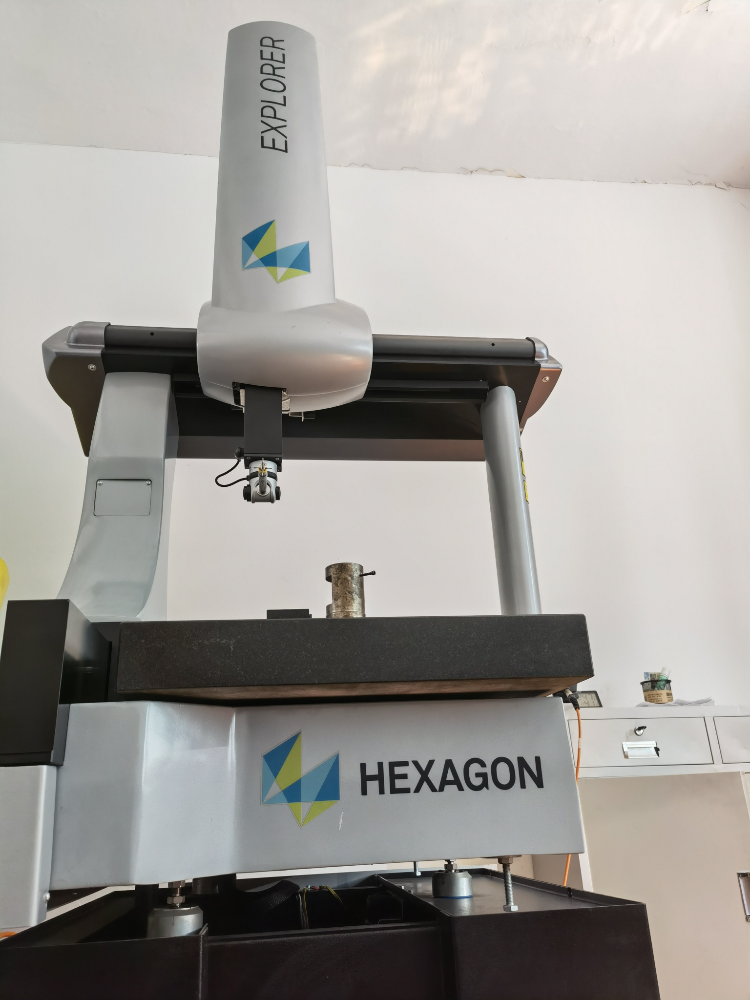

TESTING EQUIPMENT 检测设备
QA 检测设备
配备专业检测仪器,从尺寸、硬度到环保指标全面覆盖。

三坐标测量仪 / 二次元影像测量仪

高度规 · 硬度计 · 盐雾试验机 · RoHS 检测仪
从机加工、热处理到电镀、组装、出货,层层检验把控,确保每一件产品都符合高标准。
产品不同,工艺并不相同,以下表述我们具备的工艺过程。
员工自检、过程巡检、全检与抽检相结合,品质层层把关。
工序自检与过程检验,品质从源头做起
生产全过程 IPQC 巡检,及时纠偏
按 GB2828.1 标准执行,科学判定
出货检验与客户服务,全程可追溯
配备专业检测仪器,从尺寸、硬度到环保指标全面覆盖。
